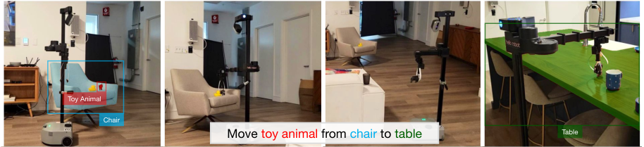
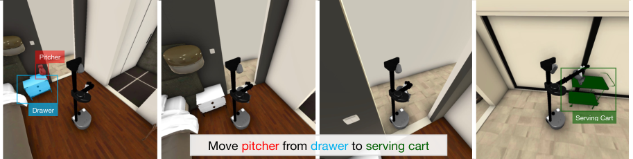
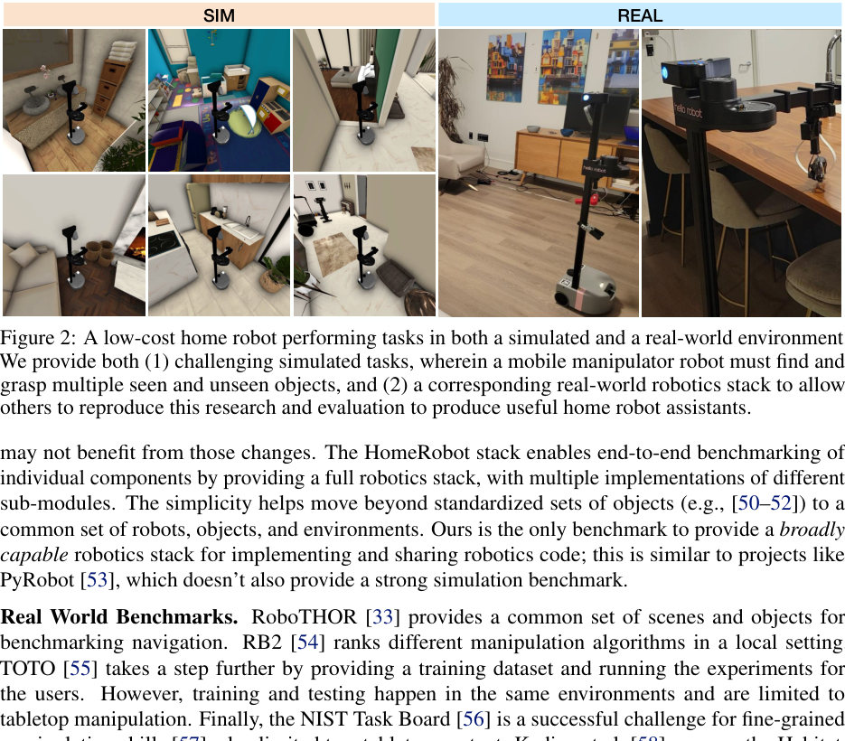
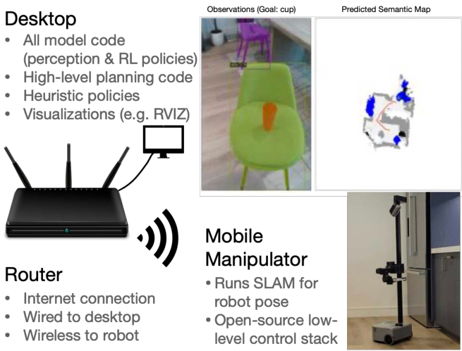
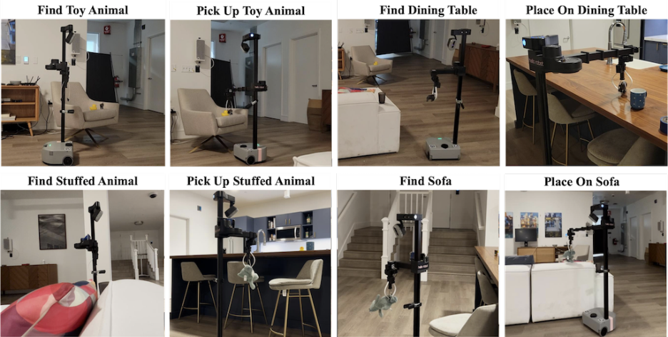

💡速记层 · 思想 / 逻辑 / 方法
默认读完就走的一层——只讲思想、逻辑、方法骨架；结果只作验证。要核对原文细节再看下面「深读层」。
- 家庭机器人助手需要整合感知、语言理解、导航和操作，但现有工作各自为政：离散动作空间、小单房间、有限对象集，无法跨实验室复现。
- 近年语言-视觉融合模型（CLIP 等）让机器人能泛化到开放词汇对象，但对比方法变得更难，因为测试环境、机器人平台均未标准化。
- 因此需要一个正式的任务定义 OVMM + 一个横跨仿真和真实世界的统一软件栈，让每个实验室的结果都能被其他实验室复现和对比。
- HomeRobot 用 HSSD 大规模多房间仿真场景 + Hello Robot Stretch 硬件 + 统一 API，填补这个空白。
- 两类 baseline agents（启发式 + RL）的对比揭示了感知是当前最大瓶颈，为后续研究指出方向。
真实世界 RL baseline 达到 20% 总体成功率；仿真中使用 Ground Truth 分割时最高达 14.8% 总体成功率（RL+RL 配置）；切换到 DETIC 分割后性能大幅下降（0.4–0.5%），揭示感知是当前主要瓶颈。
想看具体数字（点开）
- 仿真 Ground Truth + RL 全配置：总体 SR 14.8%，部分成功率 48.3%。
- 仿真 DETIC + 任意配置：总体 SR 降至 0.4–0.6%——感知误差是主要瓶颈。
- 真实世界 Heuristic Only：总体 15%；RL Only：总体 20%（20次实验）。
- 真实世界 FindObj 成功率两者均为 70%，差异主要在 Pick（35% vs 45%）。
Track A（移动操作 VLA）：背景/基准参考，非直接方法借鉴。 HomeRobot OVMM 定义了后续 VLA 工作（如 π0.5）被评测的任务空间和基础设施。它本身不是 VLA，不涉及大规模预训练或 co-training——但理解 OVMM 任务定义对看懂后续 VLA 评测至关重要。Track B（足式算法）完全不相关。建议：浏览速记层即可，深读层仅在你需要理解 OVMM 评测协议细节时再看。
◆核心观点 · 证据
每条 = 中文论点 + 📍页/节 + 🔤逐字原文 (Ctrl-F 锚点) + 🀄译文 + 💡解读。


Open-Vocabulary Mobile Manipulation (OVMM) is the problem of picking any object in any unseen environment, and placing it in a commanded location. This is a foundational challenge for robots to be useful assistants in human environments, because it involves tackling sub-problems from across robotics: perception, language understanding, navigation, and manipulation are all essential to OVMM.
comparison across methods has remained difficult and reproduction of results across labs impossible, since many aspects of the settings (environments, and robots) have not been standardized.

OVMM: We propose the first reproducible mobile-manipulation benchmark for the real world, with an associated simulation component.
HomeRobot: We also propose HomeRobot, a software framework to facilitate extensive benchmarking in both simulated and physical environments. It comprises identical APIs that are implemented across both settings, enabling researchers to conduct experiments that can be replicated in both simulated and real-world environments.
We use the Hello Robot Stretch [22] with DexWrist as the mobile manipulation platform, because it (1) is relatively affordable at $25, 000 USD, (2) offers 6 DoF manipulation, and (3) is human safe and human-sized, making it safe to test in labs [24, 11] and homes [2], and can reach most places a human would expect a robot to go.

In our setup, it is assumed that users have access to a mobile manipulator and an NVIDIA GPU-powered workstation. The mobile manipulator runs the low-level controller and the localization module, while the desktop runs the high-level perception and planning stack.
We observe that while the RL methods moved to the object more efficiently if an object was visible, the heuristic planner was better at long-horizon exploration. We also see a substantial drop in performance when switching from ground-truth segmentation to DETIC segmentation. This highlights the importance of the HomeRobot OVMM challenge, as only through viewing the problem holistically - integrating perception, planning, and action - can we build general-purpose home assistants.
RL performed slightly better than the Heuristic baseline, successfully completing 1 extra episode and achieving a success rate of 20%.

We implement both reinforcement learning and heuristic (model-based) baselines and show evidence of sim-to-real transfer of the nav and place skills. Our baselines achieve a 20% success rate in the real world; our experiments identify ways future work can improve performance.
Uniquely, we also provide a multi-purpose, real-world robotics stack, with demonstrated sim-to-real capabilities, allowing others to reproduce and deploy their own solutions.
⎘开源状态
论文发布时（2023-06）即完全开源，MIT 等宽松许可，已有 NeurIPS 2023 官方挑战赛。
- 代码
- 已开源 github.com/facebookresearch/home-robot（含三个子库：
home_robot核心 +home_robot_sim仿真栈 +home_robot_hw硬件栈） - 仿真环境
- 已开源 Habitat 仿真器 + HSSD 场景数据集（200 场景，60 个子集供实验）
- 模型权重
- 已开源 RL 和启发式 baseline agent 权重（DDPPO 训练）
- 真实数据
- 部分开放 真实公寓实验环境固定布局已文档化，但无真实数据集录像发布
To facilitate research on these challenging problems, we open-source the HomeRobot library, which implements navigation and manipulation capabilities supporting Hello Robot's Stretch [22].
https://github.com/facebookresearch/home-robot；NeurIPS 2023 HomeRobot OVMM 竞赛也基于此代码库运行。⚖批判 · 评级
OVMM 任务定义和评分协议（四阶段部分成功）已成为后续工作的标准参照，理解它对读懂 π0.5 等 VLA 论文的评测设置至关重要。"感知是最大瓶颈"的实验结论（GT 分割 vs. DETIC 性能崩塌）直接指出了 VLA 为何需要强大的 open-vocabulary 感知能力。HomeRobot 软件栈（Habitat + Stretch 共享 API）至今仍是 mobile manipulation 研究的标准基础设施，理解其架构帮助理解后续研究的实验设置。
① 仿真抓取用"magic snap"（魔法吸附），不物理模拟 gripper-object 交互，这是论文明确承认的局限（Appendix B），导致仿真与真实的最大差距恰恰在操作本身。② 真实测试环境极小（单个 3 房间公寓，固定家具布置，20 次实验），泛化结论非常有限。③ baseline 代表性不足：没有端到端学习方法，没有 VLM/LLM 规划基线，2023 年后的竞争对手（如 OWL-ViT、GPT-4V + 机器人）在此基准上未被覆盖。④ 15-20% 的成功率实用价值尚低，距真实部署场景还有很大距离。
评级：Valuable 作为定义领域任务和提供基础设施的论文，其价值在于标准化贡献而非算法创新——对你的 Track A 是"必须了解的背景知识"，深读价值中等。